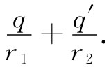
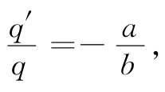
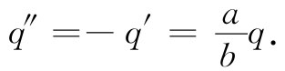

除了平面以外，还有哪些面具有简单解呢？第二种最简单的形状是球。如图6-11所示，在一金属球附近有一个点电荷q，让我们求出该球体周围的场。现在，我们必须寻找给出的等势面为球面的那种简单物理情况。如果我们事前仔细考虑人们已经解决的那些问题，就会发现，已有人注意到两个不相等 的点电荷的场会有一个球形的等势面。啊哈！如果选择那个镜像电荷的位置——并选出适量的电荷量——那么也许就能使一个等势面符合我们的球面。事实上，的确可以用下述方法做到这一点。
图6-11 点电荷q在一个接地的导电球体上感生了电荷，这些电荷的场就是被置在图中所示那一点上的一个镜像电荷q′所产生的
假设你希望有这样一个等势面：半径为a而其中心与电荷q相距为b的球面。试放置一个大小为q′=-q（a/b）的镜像电荷于该真实电荷与球心的连线上，与球心的距离为a2 /b。这样，球面就将处于零势。
数学方面的理由来源于这样的事实：球面是与两固定点的距离之比始终保持常数的所有各点的轨迹。参考图6-11，在P点由q与q′所产生之势正比于

因此，势就将在下述一切点上为零：
如果我们把q′置于距离球心为a2 /b的一点，那么比r2 /r1 就有常数值a/b。因此，若
 （6.31）
则球面便是一等势面了。事实上，它的势为零。
如果我们感兴趣的是一个不处于零势的球，情况又会怎么样呢？原来只有在其总电荷碰巧等于q′时才会有零势。当然，如果球是接地的，则在其上面所感生的电荷就恰好是那些。但如果它是被绝缘的，并且不带电荷，那又会怎么样呢？或者已知它带有总电荷Q呢？或者它具有的给定的势正好不 等于零呢？所有这些问题都不难回答。我们总可以加一个点电荷q″于球心上，通过叠加，该球面就仍保持为一等势面，只是势的大小将改变罢了。
例如，若有一个原来并没有带电而且与其他任何东西都绝缘的导电球，并将一个正的点电荷q带至其附近，那么球带的总电荷将保持为零。和以前一样通过用一个镜像电荷q′，但除此之外在球心再加上一个电荷q″而找到解。选取
 （6.32）
在球外每一处的场由q，q′与q″的场叠加而成。问题就这样解决了。
现在我们能够看到，将有一吸引力存在于球与点电荷q之间。尽管在中性球上没有电荷，力仍不会等于零的。这吸引力来自何处呢？当你把一正电荷带到一导电球外面时，该正电荷会把负电荷吸引到靠近它自己的一边而把正电荷留在较远的另一边的面上。受负电荷的吸引作用大于受正电荷的排斥作用，因而就有一净的吸引作用。可以通过计算算出在q′和q″所产生的场中作用在q上的力，而找出该吸引作用有多大。总力等于这两者之和：q与置在b-（a2 /b）距离上的电荷q′=-（a/b）q之间的吸引力，以及q与置在b距离上的电荷q″=+（a/b）q之间的排斥力。
那些曾在童年时代对一个发酵粉盒上的商标里画上一个发酵粉盒，而在此盒的商标里又画上另一个发酵粉盒……感到赏心悦目的人可能对下述问题感兴趣。两个相等的球，一个带有总电荷+Q，而另一个带有总电荷-Q，被置在某一距离上。它们间的互作用力有多大呢？这问题可以用无限个镜像电荷来解决。最初人们用球心上的电荷对每个球做近似，这些电荷将在另一个球中有其镜像电荷，这些镜像电荷又有其镜像电荷，如此等等。这个解就很像那发酵粉盒上的图画似的——收敛得相当快。